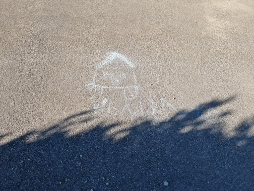

Jul 11, 2022
We signed !

Drawn on the road by Hoel, the day we got the keys, Jul 11, 2022.
Jul 13, 2022
Received the move; moving in, for real.
Sep 20, 2022 (and after), Kitchen tune-up
Click the images to enlargeMiko aussi monte une cuisine...
Click the images to enlargeDec 2022, un poële à bois dans le salon